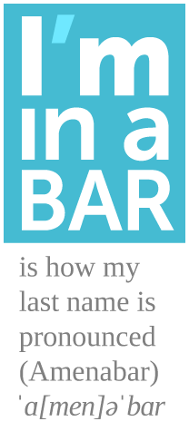

CV – Résumé
web developer / UX designer

Agustín Amenábar L.
full name: Bernardo Agustín Amenábar Larraín
ImINaBAR.com – GitHub – Code Blog – More links at the bottom
Summary
Graphic Designer by profession, web developer by choice, self employed most of my career.
Mediating between my clients and their users, facilitating their interaction and goals through web technologies. Working the web as a generalist, always trying to integrate new technologies or new approaches into projects. Huge fan of the 80/20 principle, especially when time is scarce.
User eXperience is the new term for what has driven my work for more than 8 years. Doing responsive design since the era of full Flash sites. Down to earth seasoned project manager. A veteran ActionScript orphan, now in love with front–end technologies, semantics and progressive enhancement. Expert in developing that perfectly fits my clients’ needs.
Doing the most varied client work since 2004, always elbow to elbow with designers. From UX to server–side optimization, a wide view of problems usually lets me find solutions where they are most effective.
Skills, Languages and Tools
In order of dexterity
- HTML / CSS – (6 years) + Progressive enhancement, mobile first, responsive web design.
- Project management and Client relations. (8 years)
- User experience / UI design. (7 years)
- HTML semantic markup (
<i>isn’t for icon). (6 years) - OOP ActionScript 3 (many years doing that, still good at it).
- PHP : Several styles of coding. (7 years)
- JavaScript (6 years)
- MySQL (7 years)
- LAMP/WAMP server management (many years managing web-hosting for many clients).
Frameworks / CMSs
Listed here is only what I’m fluent in and what I like working with. I have working knowledge of many more.
- Sencha Touch 2 (MVC JavaScript) (2 years)
- jQuery (5 years)
- WordPress (5 years)
- Drupal (1 year)
- Code Igniter (2 years)
Day to day Tools
- Sublime Text
- Cacoo / Google Drawing
- Google Chrome Developer Tools ♥
- Pen and paper (colors too)
- Git
- Command line / console
- SASS/Compass
- Adobe Photoshop
- Adobe Illustrator
- Adobe Flash IDE
- Adobe Edge Animate
- LESS
- Paymo
Dearest client’s projects
All of the work in medula.cl has been done under my lead; most, directly by me. Some of the most notable are:
JZMusic: event production + clients accounts
(2012 – 2013)
My earliest client, since our first conversation 9 years ago, he has had creative ideas about his site, together we have built many tools clients love.
This latest version is a full responsive, mobile first website. Custom JavaScript throughout the site. Drupal private site for the clients’ events, with a playlist generator. (ask me for access to a demo account)
Paz Vial: e-commerce
(2010 – 2013)
A long project that turned a Flash image gallery into a full fledged online store. Custom code, front to back. I designed the UI for the back-end and coded the whole site. Co-designed the client side defining visitor goals and tasks. Special attention in the client-side was dedicated to the color selector when you want to add a ceramic product to your cart: http://pazvial.cl/item.php?id=483 where you must select one or many colors for your custom piece.
Coded the full front and back-end and integrated a modified version of my jQuery File Upload and Crop project.
You can visit the admin panel of a clone at: http://m0.cl/pazvial.cl/extranet/ (ask me for a username and password) Most notably was the emphasis on simplicity and ease of use of the admin panel (WordPress had too many buttons).
Assa Abloy Chile: e-commerce
(2011 – 2013)
In this long-term project, I did the information architecture based on the printed catalogs they had, then designed the data structure of the CMS and the user flow. For the final stage I assembled and directed a team of remote developers.
While one showed me the magic of doing CSS with Compass/SASS, the other amazed me with the MVC framework CodeIgniter.
Again I integrated a modified version of my jQuery File Upload and Crop project, for the administration of banners, it was a great success with the admins of the site.
Additionally we developed a whole suite of video tutorials to be displayed on the dashboard of the Admin panel which explain the use of the different parts of the site administration process. Since then we deliver every site with a video tutorial suite.
In May 2013, I adapted the Simplecart-JS library to make a quotation cart for the site. It works completely in the front end, using local-storage and cookies to manage the “session”, and sends a predefined quotation for the sales team to fill and return to the customer.
Driver: mobile app + WordPress
(2012)
I conceived and completely developed the WDIT Android app. It was developed with Sencha Touch 2 and Cordova as a proof of concept.
The application allows users to select the activities assigned to them and check every task or sub step which can be also verified by a picture that gets uploaded to the server when connection is available.
You can view some wireframes.
{kind=link}
{kind=link}
{kind=link}
{kind=link}
{kind=link}
The app has an admin back-end to generate and control activities, tasks, users and permissions.
I developed also a whole suite of web software. From a WordPress site, an internal document publishing web app. To a custom android app.
Some of this process I documented in my blog.
VIK Winery e-commerce & promotional site
(2011)
Complete rebuild of a Flash Site retaining most of the look and layout, but coding with mobile-first responsive site. Including an adaptive images script which uses Javascript and PHP to load the adequate size images. The site was tested to work from IE7 to Blackberry 5, including common Android and iOS devices and browsers.
e-Traders: courier e-commerce
(2011)
From the begining of the project, i took the client’s idea and layed out the whole e-commerce structure (diagram here)
Defined the hierarchy of the site’s goals and content with the client, then developed the content and interactions of each screen along with the designer and content manager.
Coded the full front-end of the site (HTML/CSS/JS).
Nescappuccino Game (Nestle)
(2011)
Assembled and directed a small team to develop a Game for the sales forces of Nestlé Pro, in Chile. Also did the script, design, art direction, project direction and lead development of the game, also some illustration.
Here I learned the immense amount of work involved in game development, and learned about many runtime optimization techniques and testing techniques.
You can visit and play some stages below (only the zodiac is playable).
Aramark Chile Services mobile web-app: in Beta
(2013)
The iPad version of an interactive presentation we did earlier this year for presenting Aramark’s services for the mining industries at Expo Nor (mining exposition)
I led the whole development, from project management to the illustration team. Also did the animation, some colouring and the coding.
It’s a website designed to fully work off-line as an app launched from the home screen, but also visible on mobile phones.
Other e-commerce
I have done several more e-commerce and e-commerce-like sites, some of the ones that remain online are:
- Hot Tub Repair and Service LLC
- http://catalinaamenabar.cl/appp/ This is a mobile sales app I did in a weekend for a pastry shop (The website too).
- Right now we are building an e-commerce for a Video games shop, you can take a peek at: http://good-game.cl/dev/ (work in progress)
Older stuff
There’s older stuff, but it’s mostly Flash / ActionScript, even though there’s some cool things, like a realtime rendering 3D experimental site (must click PORTAFOLIO → 2010).
Work Experience
May 2005 – April 2006: VOXEL MULTIMEDIA
Client services agency dedicated to 3 areas:
- Graphic Design, interactive design and web development.
- Audiovisual production and post-production.
- 3D modeling, animation and rendering.
Charge: Designer / Web Designer.
Responsibilities:
- Design and development of multimedia interactive software (Flash and Director).
- Design and development of websites.
May 2006 – April 2013: VOXEL → MEDULA DISEÑO
Client services agency dedicated to Graphic Design, interactive design and web development. Branch of Voxel Multimedia. On April of 2009 one partner sold his part to my wife and me and we became Médula Diseño where my wife Violeta Sánchez E. does most of the design job and I the development.
Charge: Partner and Senior Developer.
Responsibilities:
- Project management.
- Design and development of websites.
- Design and development of multimedia interactive software (Flash and Director).
Personal projects
Some work fine and I use everyday, some are work in progress; all could use some more work.
- SVGfall SVG images with reliable fast fallback to bitmap.
- jQuery File Upload and Crop Friendly multiple image uploader with a crop window. Demo page. Forked from BlueImp’s jQuery Uploader.
- Draggable elements bookmarklet jQuery and jQuery UI bookmarklet to easily make any element draggable with relative, absolute or fixed positioning.
- Liquen-php PHP image manipulation class (resize, crop and caching) Demo
- PNG with PHP GET a simple PNG entering width, height and RGBA values.
- Medula codeBlog / SLyP My attempt to build a static blog generator after only hearing about Jekyll. Still remains as my code blog.
- Musicador Music player designed for creating, managing and migrating roleplaying music (mp3 files).
Education
School
Colegio Cumbres, Santiago, Chile.
(1986 – 1998)
College
Universidad Finis Terrae (1999 – 2005)
Bachelor’s degree in Graphic Design.
Languages
Bilingual in English and Spanish.
Personal information
- Full name: Bernardo Agustín Amenábar Larraín
- Birth date: March 14, 1981
- Address:
Camino agua del Carrizal 9570, Lo barnechea
Santiago, Chile - email: baamenabar@gmail.com
- Telephone: +562 2918 0224
- Nationality: Chilean
- Marital status: Married ♥
Links elsewhere
Colophon
This site has it’s own repository on Github, built using Jekyll written with Textile markup.
This HTML CV has also been designed to be printed as a PDF with the proper page-breaks. It will maintain most of it’s layout. If your are reading this on a PDF you can visit the original (and maybe updated) CV on iminabar.com
Thanks for reading so far
Agustín